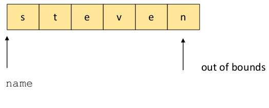

The C library function gets() reads a string from stdin and copies it into a memory location. The prototype for gets is
char *gets(char *str)
The function gets() stores the string read from stdin at the memory location pointed to by
str,
including the null termination character '\0'.
gets() does not put a bound on the length of the string read and copied from stdin. Thus, an
unbounded string copy can overwrite unintended memory locations. For example, the code
int main(int argc, char **argv) {
char name[5];
printf("Enter name: ");
gets(name);
}
reads an arbitrary length string from stdin into the memory location pointed to by name. If that
strings is longer than 5 characters, including the null termination character, then memory outside of that allocation for name
will be inadvertantly overwritten. For example, if the user enters "steven", the memory will contain
